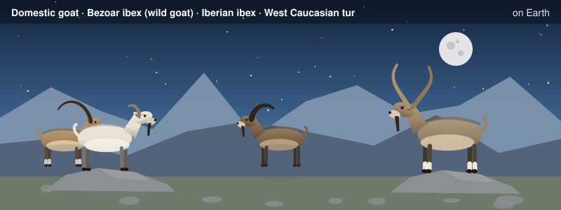

Getting Started¶

About the animals in this picture and where they are standing
- Domestic goat (Capra hircus) descends from the bezoar ibex and is among the oldest domesticated animals. There are on the order of a billion of them, kept for milk, meat, fibre and as pack animals.
- Bezoar ibex (wild goat) (Capra aegagrus) lives from Turkey and the Caucasus through Iran to Pakistan. It is the wild ancestor of the domestic goat, which people began keeping some ten thousand years ago.
- Iberian ibex (Capra pyrenaica) lives in the mountains of Spain and Portugal. Its Pyrenean subspecies, the bucardo, died out in 2000. In 2003 scientists cloned one; the kid lived only minutes, making it the first extinct animal to be cloned.
- West Caucasian tur (Capra caucasica) lives only in the western Caucasus, on steep slopes above the forest line. Its horns are short and heavy, curving outward and back, and it moves up and down cliffs with ease.
The scene is imaginary: it is set on Earth, with its Moon in the sky. The animals are stylised drawings, shown where they could not live, for effect.
Everything in this book runs on Python 3 and three open-source programs. There is nothing to buy, no account to create and no license to accept. This page takes you from an empty machine to a verified setup, shows every command you will use in the book with its real output, and lists what goes wrong most often.
Time needed: about 10 minutes to install and about 1 minute to verify. Disk: under 1 GB for the tools plus the repository. Hardware: any laptop; the longest script in the book (Chapter 10, synthesis plus fault grading) takes several minutes on a 4-core machine.
What you need¶
| Program | What it does in this book | Version used for every number in the book |
|---|---|---|
Icarus Verilog (iverilog, vvp) |
The reference simulator; every testbench runs here | 12.0 |
| Verilator | A second, independent simulator (it compiles the design to C++); every testbench also runs here | 5.020 |
| Yosys | Synthesis: turns the Verilog into gates and counts them | 0.33 |
| Python 3 | Golden models, the assembler, the compiler, and the test scripts. Standard library only (no NumPy) | 3.11 |
A C++ compiler and make |
Verilator compiles its output with them | any recent g++ or clang |
| MkDocs + Material (optional) | To build this site yourself | any recent version |
Step 1: install the tools¶
Debian and Ubuntu (and Windows under WSL2, see below):
sudo apt-get update
sudo apt-get install -y iverilog verilator yosys python3 python3-pip make g++ git
Fedora: sudo dnf install iverilog verilator yosys python3 python3-pip make gcc-c++ git
macOS (Homebrew): brew install icarus-verilog verilator yosys python3 git (the C++ compiler comes with the Xcode command line tools: xcode-select --install)
Arch: sudo pacman -S iverilog verilator yosys python python-pip make gcc git
Windows: install WSL2 (open PowerShell as administrator and run wsl --install -d Ubuntu, then restart), open the Ubuntu terminal and follow the Debian and Ubuntu steps above. The book's commands are Linux commands; native Windows is not supported. Keep the repository inside the Linux file system (your WSL home directory), not under /mnt/c, or file access will be slow.
Package versions. Distribution packages differ in age. The book's numbers come from the versions in the table (what Debian 12 and recent Ubuntu releases ship). Newer or older tools will usually work, but a synthesis cell count can change by a few cells between Yosys versions, and a Verilator older than 5.0 lacks the --binary option the book uses. If your distribution's Verilator is older than 5.0, build the current release from source (https://verilator.org/guide/latest/install.html) or use a newer distribution.
Optional: a container. If you prefer not to install anything on your machine, a plain Debian container works with the same apt-get line. (This is a suggestion; the book's results were produced on Debian with the packages above, not in a container.)
docker run -it --rm -v "$PWD":/work -w /work debian:12 bash
# then, inside the container:
apt-get update && apt-get install -y iverilog verilator yosys python3 python3-pip make g++ git
Step 2: get the code¶
git clone https://github.com/MaximumBeings/silicon_compiler_from_scratch.git
cd silicon_compiler_from_scratch
ls
Every command in the book is run from this directory (the book root). The testbenches read their test vectors with paths such as out/adder4_vectors.hex, relative to it.
Step 3: check the versions¶
Expected output (yours may differ slightly in the build details):
Icarus Verilog version 12.0 (stable) ()
Verilator 5.020 2024-01-01 rev (Debian 5.020-1)
Yosys 0.33 (git sha1 2584903a060)
Python 3.11.15
Step 4: your first run¶
This is Chapter 1's whole loop on a 4-bit adder. It takes a few seconds. The output should end like this:
== 1. the golden model writes the 512 expected answers
512 cases written to out/adder4_vectors.hex
== 2. Icarus Verilog
PASS: all 512 cases match the golden model
tb/adder4_tb.v:15: $finish called at 512000 (1ps)
(exit status 0)
== 3. Verilator, a second, independent simulator
PASS: all 512 cases match the golden model
- tb/adder4_tb.v:15: Verilog $finish
(exit status 0)
== 4. Yosys, generic gates
cells after mapping to simple gates: {'$_NAND_': 12, '$_XOR_': 8} total 20
== 5. Yosys, for an FPGA (the Lattice iCE40 family's 4-input lookup tables)
cells: {'SB_LUT4': 9} total 9
Two PASS lines (one per simulator) and two cell counts mean everything is installed correctly. If you see an error instead, go to the troubleshooting table at the end of this page.
Step 5: the same thing by hand¶
The scripts in tools/ are thin wrappers; here is what they run, so that you can do each step yourself. These are the commands behind Chapter 1.
Simulate with Icarus Verilog (compile with iverilog, run with vvp):
-g2012 selects the SystemVerilog-2012 dialect, -s adder4_tb names the top module, -o names the compiled output.
Simulate with Verilator (compile to C++, build, run):
verilator --binary --timing -Wno-fatal -Wno-lint -Wno-style --top-module adder4_tb -Mdir /tmp/vl_adder4 -o sim rtl/adder4.v tb/adder4_tb.v
/tmp/vl_adder4/sim
Synthesize with Yosys to generic gates, and count them:
yosys -p "read_verilog rtl/adder4.v; synth -top adder4; abc -g AND,NAND,OR,NOR,XOR,XNOR,ANDNOT,ORNOT,MUX; stat"
For an FPGA mapping replace synth with synth_ice40.
From Python. tools/hw.py wraps all three programs; every chapter script uses it. You can call it yourself from the book root:
import sys; sys.path.insert(0, "tools"); import hw
rc, out = hw.sim_icarus(["rtl/adder4.v", "tb/adder4_tb.v"], "adder4_tb")
print(rc, out.splitlines()[0])
g = hw.synth_stats(["rtl/adder4.v"], "adder4")
print(g["total"], g["cells"])
0 PASS: all 512 cases match the golden model
20 {'$_ANDNOT_': 3, '$_AND_': 3, '$_NAND_': 1, '$_NOR_': 3, '$_OR_': 2, '$_XNOR_': 6, '$_XOR_': 2}
(The generic count here is Yosys's default synth mapping, 20 cells; Chapter 1's script maps to a restricted gate set and gets 20 cells of different kinds. Both are "the adder costs about 20 gates".)
Step 6: the book's tools, with sample calls¶
The assembler and the cycle model (Chapter 7): assemble two instructions, see the machine code, and ask the model how many cycles the program takes.
import sys; sys.path.insert(0, "model"); import ga2_isa as I
prog = I.assemble("ld dst=0 src=0 len=4\nhalt")
print([hex(I.encode(x)) for x in prog])
print(I.cycle_counts(prog)) # [total, mm, dma, vec, n_inst]
The systolic wavefront printer (Chapter 4): which processing element does which product on each cycle, for a 2 x 2 array and a 3-long inner dimension.
cycle 0: PE(0,0)<-A[0][0]*B[0][0]
cycle 1: PE(0,0)<-A[0][1]*B[1][0] PE(0,1)<-A[0][0]*B[0][1] PE(1,0)<-A[1][0]*B[0][0]
cycle 2: PE(0,0)<-A[0][2]*B[2][0] PE(0,1)<-A[0][1]*B[1][1] PE(1,0)<-A[1][1]*B[1][0] PE(1,1)<-A[1][0]*B[0][1]
cycle 3: PE(0,1)<-A[0][2]*B[2][1] PE(1,0)<-A[1][2]*B[2][0] PE(1,1)<-A[1][1]*B[1][1]
cycle 4: PE(1,1)<-A[1][2]*B[2][1]
12 multiply-accumulates in 5 cycles on 4 PEs: utilization 0.600 = K/(K+2N-2) = 0.600
Every chapter has the same three kinds of script, all run from the book root:
| Kind | Name | What it does | Example |
|---|---|---|---|
| The chapter's run | tools/chNN_run.py (Chapter 1: ch01_flow.py) |
Generates the golden vectors, runs the testbenches in both simulators, and synthesizes | python3 tools/ch04_run.py |
| The running examples | tools/chNN_example_a.py, _b.py |
The two worked examples at the end of each chapter (Chapters 1 to 7 so far; later chapters are being expanded the same way) | python3 tools/ch05_example_a.py |
| The mutation test | tools/mut_chNN.py |
Breaks the circuit one line at a time and checks that the tests notice (the "test the tests" step) | python3 tools/mut_ch02.py |
A mutation script prints caught lines on purpose and exits with status 0 only if every real mutant was caught. Its output ends like this (Chapter 1):
structure: only three of the four stages are built: caught
10 of 10 broken circuits caught
An equivalent change (same behaviour, different text):
EQUIVALENT: carry written with OR instead of XOR for the propagate term: NOT CAUGHT
"NOT CAUGHT" on a line marked EQUIVALENT is correct: that change does not alter behaviour, so no test can notice it (Chapter 1 explains).
Which script for which chapter, and how long it takes¶
Times are wall-clock seconds on the sandbox where the book was written (a few cores), for the chapter's run script. Yours will differ; the ratios will not.
| Chapter | Run | Measured time | What it checks |
|---|---|---|---|
| 1 The flow | tools/ch01_flow.py |
6 s | adder, 512 cases, two simulators, Yosys |
| 2 MAC | tools/ch02_run.py |
21 s | 65,536 multiplier cases, 3,039 MAC checkpoints |
| 3 Quantization | tools/ch03_run.py |
20 s | 201,808 requantizer cases |
| 4 Systolic array | tools/ch04_run.py |
122 s | six array shapes, Yosys cost for four sizes |
| 5 Scratchpad and DMA | tools/ch05_run.py |
68 s | eight stream shapes, to the cycle |
| 6 Vector unit | tools/ch06_run.py |
see the chapter | table, divider, softmax |
| 7 GA-2 | tools/ch07_run.py |
several minutes | 78 + 200 programs, memory and cycle counts |
| 8 to 12 | tools/ch08_run.py ... ch12_run.py |
minutes each | attention, batching, synthesis, compiler, tiny language model |
To run every chapter's script (leave it running; use a terminal multiplexer on a remote machine):
for n in 02 03 04 05 06 07 08 09 10 11 12; do python3 tools/ch${n}_run.py > out/ch${n}_run_out.txt 2>&1 || echo "chapter $n FAILED"; done
Each script exits with a non-zero status if a test fails, so || echo ... is enough to see problems.
Step 7: read and build this book locally (optional)¶
pip install -r requirements.txt # mkdocs and mkdocs-material
mkdocs serve # then open http://127.0.0.1:8000/
mkdocs build --strict # a one-off build into site/; fails on any broken link or snippet
mkdocs serve rebuilds the page when you edit a file. The pages embed the repository's source files and recorded outputs directly (the --8<-- includes), so what you read is what is in rtl/, model/, tools/ and out/.
How the repository is laid out¶
rtl/ the Verilog (one file per module, kept stable once a chapter has used it)
tb/ self-checking testbenches
model/ the Python golden models, the assembler, the compiler (Capra)
tools/ hw.py (the toolbox around the three programs), one run script and one
mutation script per chapter, the example scripts, the figure generators
lib/ the toy standard-cell library used in Chapter 10
out/ test vectors and the recorded outputs the pages show
docs/ the chapters (docs/partNN/NN-name.md), the answers, this page
Conventions you will see in every chapter¶
- Every circuit has an independent Python golden model. The model does not look at the Verilog.
- Every testbench is self-checking. It prints
PASSand exits 0, or printsFAIL/MISMATCHand exits non-zero. You never read waveforms to decide. - Every test is tested by mutation. The
mut_chNN.pyscript is the proof that a passing test can fail. - Numbers are labelled. Measured (a script printed it), derived (it follows from a formula shown on the page) or assumed (stated as an assumption).
- The model is a model of a chip, not a chip. Gate counts are Yosys counts; there is no timing, area or power for a real process except where Chapter 10's toy library says so.
- Exit status.
(exit status 0)in an output means the program succeeded.
Troubleshooting¶
| Symptom | Cause and fix |
|---|---|
iverilog: command not found |
The package name differs by system: iverilog on Linux, icarus-verilog on Homebrew. |
verilator: command not found or unknown option --binary |
Verilator is missing or older than 5.0. Install a current release (see Step 1). |
yosys: command not found |
Install yosys (Linux) or brew install yosys. |
syntax error on a file that looks fine |
A SystemVerilog keyword used as a name (bit, logic, int, ...) under -g2012: rename it. |
ModuleNotFoundError: No module named 'hw' |
Run the script from the book root (python3 tools/ch02_run.py), not from inside tools/; or add sys.path.insert(0, "tools") as in the sample above. |
A testbench cannot find out/...hex |
Run scripts from the book's root directory: the testbenches read their vectors with paths relative to it. |
| Verilator prints hundreds of warnings | The book runs it with -Wno-fatal -Wno-lint -Wno-style; the warnings are lint, not errors. |
| Verilator is very slow to build the first time | It compiles C++; the first build of a large design takes tens of seconds. The book's scripts rebuild every run so that results never depend on a stale build. |
| Yosys numbers differ slightly from the book | A different Yosys version. The book's figures are for 0.33. |
| A script seems to hang | Chapters 7 and later simulate hundreds of thousands of clock cycles; Chapter 2's MAC test simulates several hundred thousand. Check CPU use before assuming a hang. (A testbench that loops until it sees an unknown x value does hang in Verilator; the book's testbenches avoid it, see Chapter 2.) |
mkdocs build --strict fails on an include |
A snippet path is relative to the book root; run mkdocs from there. |
| Out of disk space | Verilator builds go to a temporary directory and are deleted after each run; rm -rf /tmp/vlt_* /tmp/ico_* removes any left behind by an interrupted run. |
Still stuck? Open an issue in the repository (https://github.com/MaximumBeings/silicon_compiler_from_scratch/issues) with the command you ran, the full output and the four version lines from Step 3.